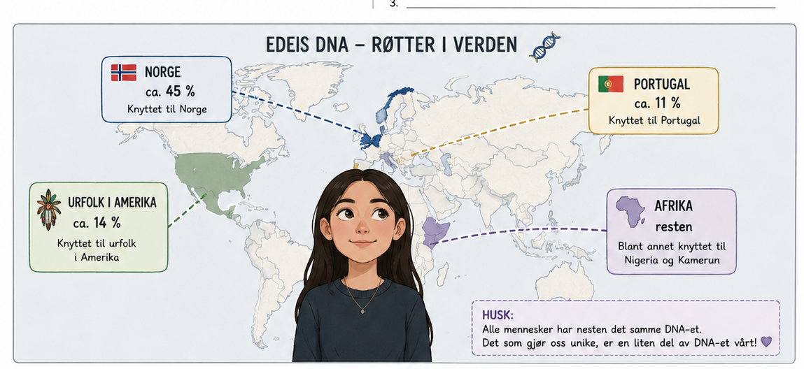
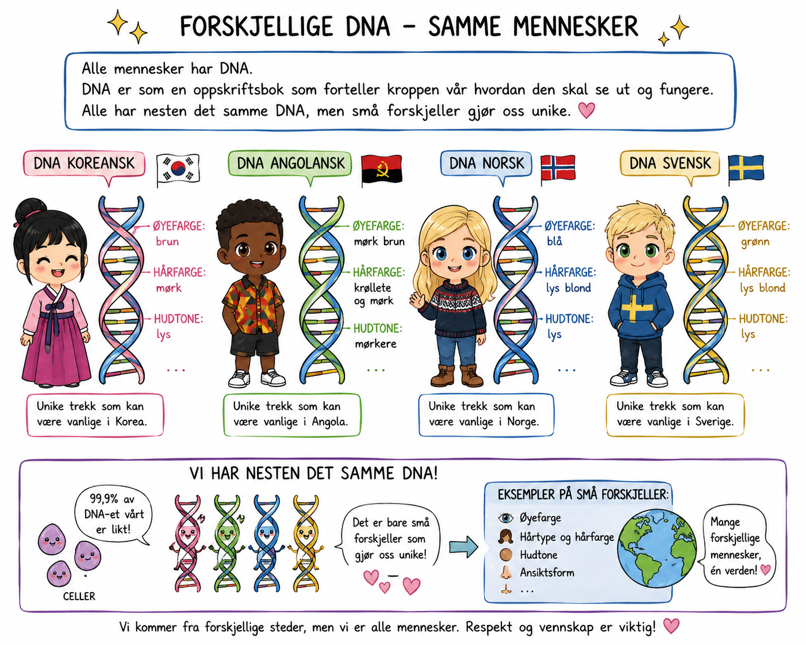

🎯 DENNE HISTORIEN ØVER PÅ
Setningsmønster: at-setning.
| Subjekt | Verb | At | Setningens innhold |
|---|---|---|---|
| Testen | viser | at | Edel har røtter i flere steder. |
| Edel | vet | at | hun har arvet DNA fra foreldrene sine. |
| Jeg | synes | at | DNA er spennende å lære om. |
| Mamma | sier | at | familien kommer fra ulike land. |
⚠️ NB! Rett etter «at» kommer HVEM (subjektet) først, og verbet etterpå.
🔑 Nytt ord i dag
🎯 omtrent
= ikke helt nøyaktig, men nesten
«Det er omtrent 45 %.» Det kan være litt mer eller litt mindre.
viser = forteller
røtter = hvor familien kommer fra
knyttet til = har forbindelse med

Les teksten. Se hvem som kommer rett etter «at».

at
hvem
verb
✍️ Skriv tre setninger om Edels DNA. Bruk minst én at-setning, ett derfor og ett dermed.
Du kan begynne slik:
Testen viser at jeg har røtter knyttet til flere land.
Derfor er jeg unik.
Dermed forstår jeg mer om familien min.
Derfor er jeg unik.
Dermed forstår jeg mer om familien min.
🌟 Til slutt: Hva synes du var mest interessant å lære om DNA i dag?
🎧 Lytt til hver del. Ikke se på teksten. Etterpå skal du fortelle med dine egne ord hva du hørte.
⭐ Bonus: at + derfor/dermed
Testen viser at Edel har røtter knyttet til Portugal. Derfor liker familien både norsk og portugisisk mat.
Edel vet at hun har arv fra flere land. Dermed føler hun seg litt som en verdensborger.
Mamma synes at røttene er spennende. Derfor snakker vi ofte om det hjemme.
Husk: etter at kommer hvem, men etter derfor/dermed kommer verbet!